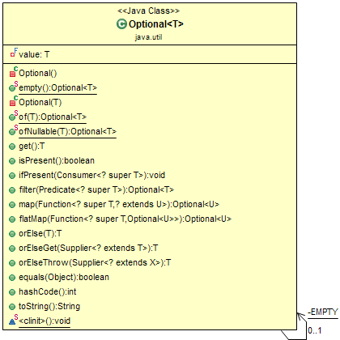

Java introduced a new class Optional in JDK 8. It is a public final class and is used to deal with
NullPointerException in Java applications. You must import java.util package to use this class.
It provides methods that are used to check the presence of a value for the particular variable.
The purpose of the class is to provide a type-level solution for representing optional values instead of using null references.
NullPointerException at run-time.The Optional.ofNullable() method returns a Non-empty Optional if a value is
present in the given
object. Otherwise, it returns an empty Optional. Optional.empty() method is
useful to create an
empty Optional object.
import java.util.Optional;
public class OptionalBasicExample {
public static void main(String[] args) {
Optional<String> gender = Optional.of("MALE");
String answer1 = "Yes";
String answer2 = null;
System.out.println("Non-Empty Optional:" + gender);
System.out.println("Non-Empty Optional: Gender value : " + gender.get());
System.out.println("Empty Optional: " + Optional.empty());
System.out.println("ofNullable on Non-Empty Optional: " + Optional.ofNullable(answer1));
System.out.println("ofNullable on Empty Optional: " + Optional.ofNullable(answer2));
// java.lang.NullPointerException
System.out.println("ofNullable on Non-Empty Optional: " + Optional.of(answer2));
}
}
The isPresent() method returns an Optional with the specified present
non-null value.
Example :
private static void isPresentOptionalAPI() {
Optional<String> opt = Optional.of("Ramesh");
System.out.println(opt.isPresent());
}An empty() static method returns an empty Optional instance. No value is present for this
Optional.
Example :
private static void createEmptyOptionalObject() {
Optional<String> empty = Optional.empty();
System.out.println(empty.isPresent());
String name = "Ramesh";
Optional.of(name);
}If a value is present, invoke the specified consumer with the value, otherwise do nothing.
Example :
private static void ifPresentOptionalAPI() {
String name = "Ramesh";
if (name != null) {
System.out.println(name.length());
}
Optional<String> opt = Optional.of("Ramesh");
opt.ifPresent(str -> System.out.println(str.length()));
}Return the value if present, otherwise returns another.
Example :
private static void orElseOptionalAPI() {
String nullName = null;
String name = Optional.ofNullable(nullName).orElse("Ramesh");
System.out.println(name);
}Return the value if present, otherwise invoke other and return the result of that invocation.
Example :
private static void orElseGetOptionalAPI() {
String nullName = null;
String name = Optional.ofNullable(nullName).orElseGet(() -> "Ramesh");
System.out.println(name);
}Return the contained value, if present, otherwise throw an exception to be created by the provided supplier.
Example :
private static void orElseThrowOptionalAPI() {
String nullName = null;
String name = Optional.ofNullable(nullName)
.orElseThrow(IllegalArgumentException::new);
System.out.println(name);
}If a value is present in this Optional, returns the value, otherwise throws
NoSuchElementException.
Example :
private static void getOptionalAPI() {
Optional<String> opt = Optional.of("Ramesh");
String name = opt.get();
System.out.println(name);
} import java.util.Optional;
public class OptionalClassExamples {
public static void main(String[] args) {
isPresentOptionalAPI();
createEmptyOptionalObject();
createEmptyOptionalObjectWithStaticAPI();
ifPresentOptionalAPI();
orElseOptionalAPI();
orElseOptionalAPI();
orElseGetOptionalAPI();
orElseThrowOptionalAPI();
getOptionalAPI();
}
// Returns an Optional with the specified present non-null value.
private static void isPresentOptionalAPI() {
Optional < String > opt = Optional.of("Ramesh");
System.out.println(opt.isPresent());
}
// Returns an Optional with the specified present non-null value.
private static void createEmptyOptionalObject() {
Optional < String > empty = Optional.empty();
System.out.println(empty.isPresent());
// Optional object with the static of API:
String name = "Ramesh";
Optional.of(name);
}
private static void createEmptyOptionalObjectWithStaticAPI() {
String name = "baeldung";
Optional.of(name);
}
// If a value is present, invoke the specified consumer with the value, otherwise do
// nothing.
private static void ifPresentOptionalAPI() {
// The ifPresent API enables us to run some code on the wrapped value if it is
// found to be non-null.
// Before Optional, we would do something like this:
String name = "Ramesh";
if (name != null) {
System.out.println(name.length());
}
Optional < String > opt = Optional.of("Ramesh");
opt.ifPresent(str -> System.out.println(str.length()));
}
// If a value is present, invoke the specified consumer with the value, otherwise do
// nothing.
private static void orElseOptionalAPI() {
// With orElse, the wrapped value is returned if it is present and the argument
// given to
// orElse is returned if the wrapped value is absent
String nullName = null;
// If a value is present, invoke the specified consumer with the value, otherwise
// do nothing.
//
String name = Optional.ofNullable(nullName).orElse("Ramesh");
System.out.println(name);
}
private static void orElseGetOptionalAPI() {
String nullName = null;
String name = Optional.ofNullable(nullName).orElseGet(() -> "Ramesh");
System.out.println(name);
}
private static void orElseThrowOptionalAPI() {
// This will throw exception
String nullName = null;
String name = Optional.ofNullable(nullName)
.orElseThrow(IllegalArgumentException::new);
System.out.println(name);
}
private static void getOptionalAPI() {
Optional < String > opt = Optional.of("Ramesh");
String name = opt.get();
System.out.println(name);
}
}